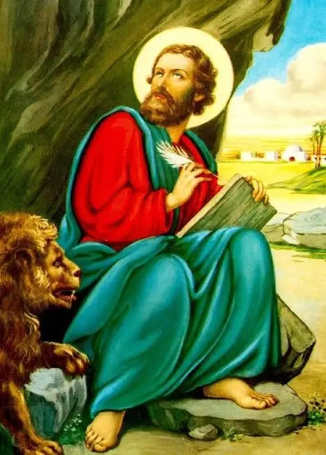
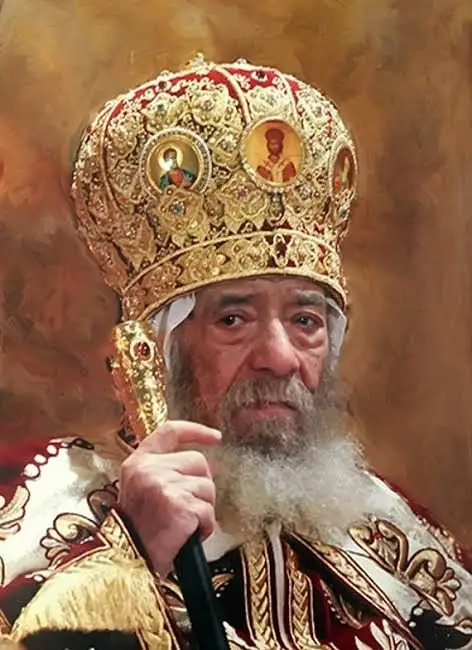
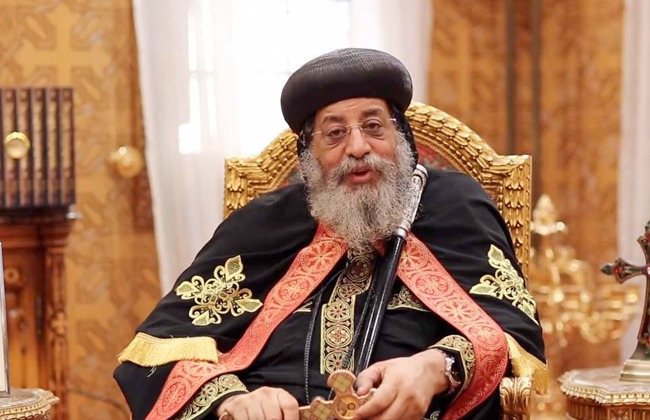

أشهر البطاركة

القديس مرقس الرسول
مؤسس كنيسة الإسكندرية وأول بابا للكنيسة القبطية الأرثوذكسية.
البابا كيرلس السادس
البطريرك رقم 116 وأحد أشهر بطاركة الكنيسة في العصر الحديث.

البابا شنودة الثالث
البطريرك رقم 117 وصاحب العديد من المؤلفات والمحاضرات.

البابا تواضروس الثاني
البطريرك رقم 118 للكنيسة القبطية الأرثوذكسية.